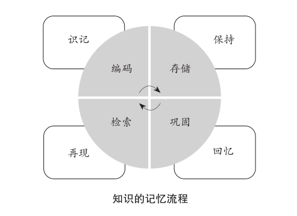
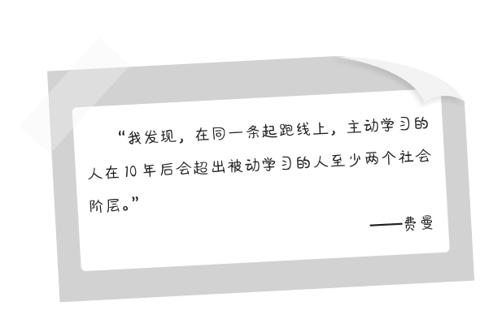

第十三章
用“输出”倒逼“输入”
在费曼学习法中，“输入”可以帮助“输出”，“输出”可以倒逼“输入”。输出知识就是在扮演一名老师或传道者的角色，在教别人领悟这个知识时，大脑能自动地启动检查程序，看看学到的知识哪儿有问题，哪儿还不够明白，发现知识的阻塞环节，进一步地打通已经学会的内容，让它们与自己的知识体系建立紧密而有益的连接。
我们教授别人的过程同时还具有一种强化记忆并且加深理解的作用。在传授的场景输出给别人以后，对于重要的知识点，你的印象将更加深刻；对不容易理解的地方，你的分析也将更加深入。
因为在你教授给别人的时候，对方若经思考，就一定会提出他质疑、疑问和新的想法。你们之间的互动就产生了，一问一答，就会促进对于知识的有效学习，增强你的认知和理解。退一步讲，即便没有互动，他是一个安静的倾听者，你也能检验自己的记忆是否存在偏差，表达是否足够准确。
输出的“记忆学原理”
倒逼输入，最直接的好处是加强了对于特定内容的“留存率”。什么是留存率？打个比方，就像一张滤网，我们把所有的信息从滤网上倒下去，留下来的就是学到的知识，它除以知识的整体，得出的结果就是留存率。比如，十页的书你记住了一页，留存率是10%，记住了九页，留存率就是90%。可见，留存率越高，学习的效果就越好。如果学了东西一点都没记住，说明留存率是零，记忆功能在此处令人惊讶地失效了。显然，这表明你的学习策略出了严重的问题。
在记忆学的研究中，科学家认为记忆是过去的经验在人大脑中的反映，它不但是神经活动，还是一种复杂的心理活动。虽然神经细胞承担着记忆的主要责任，但人的心理活动却影响着记忆最终的效果。记忆的形成包括了识记、保持、再现和回忆四个基本环节，每个环节都不可或缺，也都由神经细胞和心理活动共同完成。
其中，“识记”是我们通过对信息的感知并在大脑中留下印象的过程，是记忆的开始，也是记忆的关键部分。识记的成功率如何，直接决定了后面四个环节的效果。科学家发现，有意识记的成功率高，无意识记的成功率低。提高记忆最直接的方法，就是促进“有意识记”，加强大脑对于信息的第一印象，使大脑主动地开启记忆程序。

第一，识记——编码。
我们的感官系统对于外界的刺激并非是悉数接收，不存在不加以区别便全部输入大脑的情况。因此识记信息时大脑有一个编码的步骤，即精准地识别信息，记录信息，把那些应该被记忆的内容挑选出来。
大脑主要靠经验和感知去判断要选择哪一些作为编码的对象。比如阅读一本书，你会重点记忆那些好看、专业和能解决问题的内容，这由你的经验和阅读时的感知来决定。为了提高编码的效率，我们要保证自己拥有一个完整的知识系统，能对信息进行系统性的程序化处理，接触到的知识进入大脑前都会被自动化地归类。
如果你的大脑缺乏知识系统，在对信息识记编码时就会遇到麻烦。这就是有些人学习不仅老记不住知识而且连该学习哪些知识都稀里糊涂的原因——他们连自己该学什么都不清楚。
第二，保持——存储。
存储信息就是大脑形成神经回路的过程，也就是使神经元的连接越发紧密并产生定式。这个定式就是神经回路。我们的眼睛、耳朵等感觉系统获得信息以后，先储存在“感觉区”内，时间非常短，此时尚属于短时记忆，也叫第一印象，等待大脑加工处理，然后把信息传入“海马区”。在这里，海马神经的细胞回路网络受到连续的刺激，加强了突触的结合时间，信息停留的时间被延长了，便产生了“第一级记忆”。
举个例子，当你看到一个词发现自己不了解，随后就去干别的了，对这个词的记忆就停留在“感觉区”，它属于第一印象。如果就此打住，不久大脑就会把它遗忘或搁置。你从抖音看到一部电影的片段，觉得很好看，但你没采取进一步的行动，接着看别的视频，于是很快就想不起来这部电影的名字。如果你没有去干别的，而是打开百度搜索，找到了这个词、这部电影的词条，简单地看了几眼，了解到了大致内容，此时就是“第一级记忆”。接下来，你认真地浏览内容，寻找自己需要的部分，就会进入“第二级记忆”。神经学专家认为，蛋白质参与了这个阶段的信息保留，意味着信息将被使用，大脑对它真正重视起来。你将记住这部电影的名字，很可能会下载到电脑中安排时间观看。
当你继续详细地了解相关的内容，并且反复阅读和做笔记时，大脑的记忆机制就会推动产生神经回路网络。知识是怎么成为记忆呢？是新突触的联系比过去更频繁地增多了，联系越多，记忆就越牢固，知识在大脑内就会更长时间地保持和存储下去。
第三，再现——检索。
当我们需要输出知识时，对记忆而言一个重要的变化将会产生。如同平地起惊雷，大脑将开启管理知识的新模式——从单向的输入转变为同步的输出和输入。输出知识时，我们的大脑内要准确地再次呈现神经元反映的信息，指导合成信息蛋白并把知识再现出来。在这个过程中，我们还要从大脑中找到信息，检索那些关键的部分。
比如，你用一个月的时间读完了一本财务专业的书，这时有人过来请教：“我也报考财务专业，你读的这本书怎么样，能跟我讲讲吗？”你会发现自己的角色瞬间发生了改变，从一个单纯的学习者变成了要对别人传道授业的师者。你不再是“学生”，而是其他人的“老师”。过去30天学到的财务知识，此时要把它们一一找出来，还要浓缩成一个可以简单地向人阐述的版本，但又必须包含书中最重要、精彩的内容。
为了完成这个任务，大脑不得不进行一次紧急动员，从存储区检索这本书的所有的信息，把它们全部找出来；不仅再现，还要二次组合。从记忆学的角度，这会让我们的长时记忆保持得更为牢固，对知识的理解也会更上一层楼。很多人都有这个体验，成功地了解了一个知识，过段时间回忆、温习和重述时，会发现自己有了新的感悟。这就是再现和检索在大脑中起到的作用。
第四，回忆——巩固。
我们学到的知识如果不加以复习，结果注定是遗忘。输出就是一次高质量的复习，起到巩固记忆和提炼核心知识的目的。通过有针对性的、反复地输出，长时记忆甚至可以转化为永久记忆，做到终生不忘。我们在生活和工作中不假思索便能运用的知识，大部分都源于长时记忆或者永久记忆。
你用20分钟向朋友介绍了自己刚读过的财务书籍，讲了大约2500字。这2500字包括概要、作者的权威度、重点知识、适合人群、应用方向等内容，涵盖了他的关注点。解决对方所关心的问题的同时，你也为自己的学习效果又加了一把安全锁，对这本书的理解更为深刻。过几天重新阅读这本书，你能获得更好、更深入的体验。
再比如，你需要记住一条投资原则来指导自己理财。这条投资原则有文字语言，有图片分析，还有大量用于计算的公式，是非常专业的知识。如果单向地输入和机械地记忆，我认为你需要花很多的时间，几个星期，甚至几个月也未必彻底地学透，掌握其中的规律。但是运用输出的方式，找一位或数位朋友一起讨论，你把这条原则解释给他们听——整体讲述或拆分成不同的小节，时间就会大大缩短，也许几天的时间你就能对这条投资原则熟记于心。我建议你找那些不熟悉投资理财的朋友，这样能减轻你在输出时的心理压力，增强表达的信心。
因为从记忆学的角度看，在输出相关的知识时，等于我们的大脑不断地重复记忆的四个环节：识记、保持、再现和回忆，一遍又一遍地开垦这个知识，倒逼输入，也加快记忆和理解。
场景和思维模拟
假如在输出知识时我们能设计相应的场景，并逼真地模拟出不同场景中人们对应的思维方式，使我们如临其境，将强有力地刺激大脑的学习和记忆功能，在特定的场景输出知识的过程中获得意想不到的更好的效果。
模拟解说者的场景：假设你正向人们介绍一门对他们很重要而且迫切需要了解的知识，务必取得他们的认同。例如演讲。
模拟受询者的场景：假设你正接受质询和考核，必须回答问题和阐述你对于某个话题/知识的看法。例如面试。
模拟传授者的思维：模拟老师或其他传授者的思维去阐述你对知识的认知，不要把自己当成学习者。例如讲课。
模拟质疑者的思维：模拟怀疑/否定/质疑者的思考方式，想想他们会提出怎样的疑问，然后逐一解答。例如辩论。
对场景和思维的模拟十分有趣，我们在童年时经常这样互动，玩游戏，或者熟悉某种规则。我们会假设是一对夫妻过日子，构思对话；假定正进行一场战斗，指挥官对士兵发布命令；想象自己是科学家，对小伙伴解释如何才能飞上月球。为什么成年后这些行为却消失了，难道是因为这么做的效果不好，这些举动过于幼稚吗？不是。是我们失去了毫无顾忌地探索未知的勇气并埋葬了内心最富有力量的那种纯真的激情。现在，是时候把它们找出来并且重新赋予动力了。
美国心理学家佩沃（Paivio）在1975年提出了关于长期记忆的“双重编码”理论。他说：“我主张对文字信息的处理以‘意码’为主，即抽象理解，对非文字信息的处理以‘形码’为主，即图像理解。例如一块手表，它是非文字信息，我们可以在大脑中直接产生一个手表的图像，然后再表达为计时工具。手表的图像是信息的形码，计时工具是信息的意码。记忆时这两种方式同时起作用，平行和紧密地联系，必要时也相互转换。通俗地说，大脑会为自己看到的、记住的任何一样东西同时给予一个抽象理解和图像理解，就像我们在图片旁边做文字的标注一样。”
这和费曼的主张异曲同工，但费曼的方法相对又高了一个层级，他建议我们在学习中实施双重编码时创造一种模拟环境，为信息设计一个扎实的落脚之处，而不是孤立地等待大脑的录入。简言之，我们要把学习对象放到一个应用场景中，将自己放到一个需要表达它、分析它、理解它的实实在在的角色上。
比如，你看到一篇文章写得很好，内容值得我们反复地琢磨和学习。你应该假设自己懂得了这篇文章的宗旨和价值，并把它告诉另一个人。就算只是大概的意思，也要像很懂行那样把它讲出来。说错了也没关系，因为我们最终的目的是既记住这篇文章的抽象意义，也理解这篇文章的图像意义。在模拟的过程中，这两种意义都能从模糊到清晰地呈现出来，让你长时间地记住它们。
输出是主动学习
费曼认为，以教代学的输出方式属于主动学习，是拒绝等待着被知识垂幸而去主动地征服，是不想被知识选择而去为知识建立一个具有自己标准的过滤器。这两种态度截然不同，总是迅速地产生相差悬殊的效果。

这个结论有据可查。很多世界知名的机构针对学习与成功的关系做过不止一次的信息调查，收集了数万名企业家、职业经理人、都市白领和普通打工者的学习经历，了解这些人的学习方式和成就。最后发现，那些顶级企业家和优秀经理人早在成功之前甚至很小的时候就建立了主动学习的习惯，有很强的表达和输出知识的欲望，从不死记硬背。当年和他们一起读书的校友中，习惯于被动学习的人如今大部分籍籍无名，和他们已不在同一个社会阶层。我们都知道“学习改变命运”这句话，实际上正确的说法应该是：“高质量的主动学习才能改变你的命运。”
因为在主动地输出知识时你会不停地思考：“我怎样才能让对方听懂？如果要让对方听懂，我得使他明白最重要的知识点是什么，我得用他能听懂的语言。不过对这个知识点我好像也不太明白，这是为什么？”
这是一种无法推卸的压力，是大脑承接的一项重大任务，它认可并主动地告诉你去查阅资料，温习知识，有针对性地理解学习的内容。向别人讲述的过程中你一定遇到一个问题，那就是讲到一半时忽然发现自己的大脑一片空白，不是说不下去了，就是只能重复某些内容，好像一辆汽车在高速公路上迷航，只得在应急车道上原地转圈。这恰恰是在提醒你——你所学到的知识中有的内容你尚未掌握，必须回头重新理解。